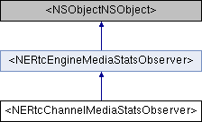

<NERtcChannelMediaStatsObserver>协议 参考
channel 统计信息回调。 更多...
#import <NERtcEngineStatistics.h>
类 <NERtcChannelMediaStatsObserver> 继承关系图:

额外继承的成员函数 | |
 构造函数 继承自 <NERtcEngineMediaStatsObserver> 构造函数 继承自 <NERtcEngineMediaStatsObserver> | |
| (void) | - onRtcStats: |
| 当前通话统计回调 SDK 定期向 App 报告当前通话的统计信息，每 2 秒触发一次。 更多... | |
| (void) | - onLocalAudioStat: |
| 本地音频流统计信息回调 该回调描述本地设备发送音频流的统计信息，每 2 秒触发一次。 更多... | |
| (void) | - onRemoteAudioStats: |
| 通话中远端音频流的统计信息回调。 该回调描述远端用户在通话中端到端的音频流统计信息，每 2 秒触发一次。 更多... | |
| (void) | - onLocalVideoStat: |
| 本地视频流统计信息回调 该回调描述本地设备发送视频流的统计信息，每 2 秒触发一次。 更多... | |
| (void) | - onRemoteVideoStats: |
| 通话中远端视频流的统计信息回调 该回调描述远端用户在通话中端到端的视频流统计信息，每 2 秒触发一次。 更多... | |
| (void) | - onNetworkQuality: |
| 通话中每个用户的网络上下行质量报告回调 该回调描述每个用户在通话中的网络状态，每 2 秒触发一次。 更多... | |
详细描述
channel 统计信息回调。
该协议的文档由以下文件生成:
- include/NERtcEngineStatistics.h